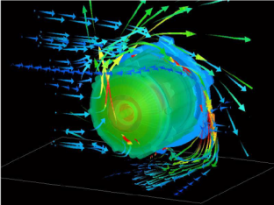

Design decisions are driven by simulation, not trial-and-error — from component design to system-level validation.
設計決策由模擬分析驅動,而非反覆試誤 — 從元件設計到系統級驗證,一以貫之。
High-efficiency, high-reliability drive; long-life operation, low vibration & noise; integrated drive of pumps/valves.
高效率、高可靠性驅動;長壽命運轉,低振動與噪音;整合驅動泵浦／閥件。
Precision flow regulation & proportional control; sealing reliability & programmable control.
精密流量調節與比例控制;密封可靠性與可程式化控制。
Integrated flow distribution & regulation across pump, valve & flow meter — toward loop-level smart fluid management.
整合泵浦、閥件與流量計的流量分配與調節 — 邁向迴路級智慧流體管理。
Design decisions are driven by simulation, not trial-and-error.
設計決策由模擬分析驅動,而非反覆試誤。
Structural strength & deformation, vibration & resonance, dynamic response.
結構強度與變形、振動與共振、動態響應。

Motor efficiency prediction, torque & loss optimization.
馬達效率預測,扭矩與損耗優化。
Motor & system temperature prediction; hotspot identification before build.
馬達與系統溫度預測;製造前預先辨識熱點。

Fluid flow behavior — stand-alone & in-system simulation.
流體流動行為 — 支援單一元件與系統級模擬。
Comprehensive gear design — optimizing gearbox efficiency and weight.
完整齒輪設計分析 — 優化齒輪箱效率與重量。
Moldflow analysis to support tooling feasibility and quality consistency.
模流分析支援模具可行性評估與品質一致性。
Motor + fluid machinery + control extends well beyond AI liquid cooling.
馬達＋流體機械＋控制,應用範疇遠不止於 AI 液冷。
Pumps, valves and flow meters for CDU and rack-level cooling loops.
應用於 CDU 及機櫃級冷卻迴路的泵浦、閥件與流量計。
High-torque BLDC motors for spraying and lift applications.
應用於噴灑與升力用途的高扭力 BLDC 馬達。
Motors and valves for climate control systems.
應用於環控空調系統的馬達與閥件。
Highly-integrated geared BLDC motors with high torque density.
高整合齒輪 BLDC 馬達,具備高扭力密度。
Solenoid Valve · Flow Meter
電磁閥．流量計
Engineering validation
工程驗證
Motorized Valve
電動閥
Pump — Mass Production
泵浦 — 量產中
Bring Pump + Motorized Valve to MP with reliability validation; then add Solenoid Valve & Flow Meter; move toward integrated modules.
推動泵浦與電動閥完成量產與可靠度驗證;接續加入電磁閥與流量計;朝整合模組發展。
Single component → flow balancing & proportional control → closed-loop smart control with flow meters.
單一元件 → 流量平衡與比例控制 → 結合流量計的閉迴路智慧控制。
Integrate with AVC (fan/cold plate/CDU/rack) and Fositek (quick disconnects); leverage group CSP relationships & validation channels.
與 AVC(風扇／冷板／CDU／機櫃)及 Fositek(快接頭)整合;運用集團 CSP 關係與驗證管道。